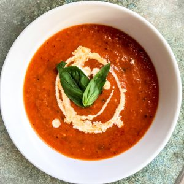

Tomato Soup

Description
This is my go-to tomato soup recipe. It's so easy and delicious.
It's easily made and ready in 30 minutes
Ingredients
- 1 tablespoon unsalted butter or margarine
- 1 tablespoon olive oil
- 1 onion, thinly sliced
- 2 large garlic cloves, peeled and crushed
- 2 cans whole peeled tomatoes
- 1 cup water
- 1 tablespoon olive oil
- 1 onion, thinly sliced
- 2 large garlic cloves, peeled and crushed
- 2 (28 ounce) cans whole peeled tomatoes
Instructions
Heat butter and olive oil in a large saucepan over medium-low heat
and cook onion and garlic until onion is soft and translucent, about 5 minutes.
- Add tomatoes, water, sugar, salt, pepper, red pepper flakes, celery seed, and oregano.
- Bring to a boil.
- Reduce heat, cover, and simmer for 15 minutes.
- Remove from heat and puree with an immersion blender.
- Reheat soup until warm and season with more salt and pepper if desired.